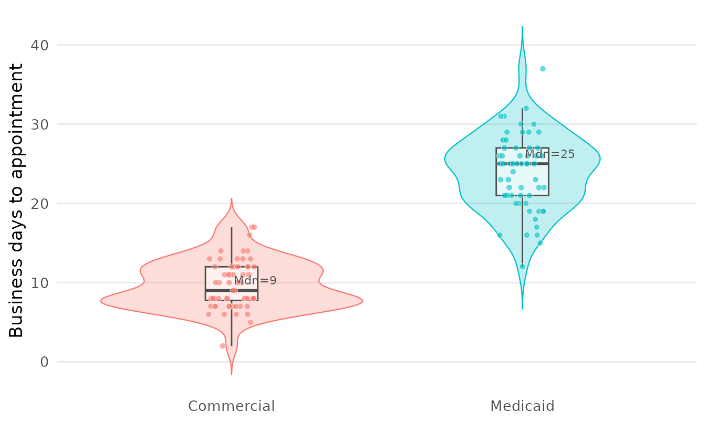
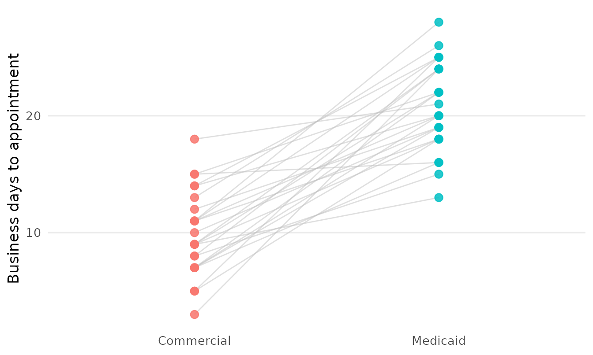

Design, power, and cleaning tools from three audit studies
Source:vignettes/audit-study-tools.Rmd
audit-study-tools.RmdThree real mystery-caller studies each hand-rolled analysis code that belonged in the package. This vignette walks the tools generalized from them, grouped by where they came from:
- a matched-pair audit (the same practice called under several caller personas) — design-integrity checks, a population-average sensitivity model, and two paired figures;
- an ENT geographic-access power study — power calculators the package’s count/paired tools did not cover;
- the original urogynecology study — raw-field cleaning for messy call logs.
1. Design integrity for a matched multi-scenario audit
A matched design only draws information from practices reached under both arms of a contrast, so before analysing anything it is worth knowing how complete the design actually is — and whether a mistyped practice name has quietly split one practice into two.
set.seed(1)
practices <- sprintf("Practice %02d", 1:12)
calls <- do.call(rbind, lapply(seq_along(practices), function(i) {
scen <- switch(as.character(i %% 3 + 1),
"1" = c("Straight couple", "Lesbian couple", "Single mother"),
"2" = c("Straight couple", "Lesbian couple"),
"3" = "Straight couple")
data.frame(practice = practices[i], scenario = scen)
}))
head(calls)
#> practice scenario
#> 1 Practice 01 Straight couple
#> 2 Practice 01 Lesbian couple
#> 3 Practice 02 Straight couple
#> 4 Practice 03 Straight couple
#> 5 Practice 03 Lesbian couple
#> 6 Practice 03 Single mothermysterycall_scenario_coverage() reports, per practice,
which scenarios were observed, and rolls that up into complete / partial
/ singleton counts plus a missing-per-scenario tally.
cov <- mysterycall_scenario_coverage(calls, "practice", "scenario")
cov
#> Scenario coverage across 12 clusters
#> complete (all 3 scenarios): 4
#> partial (2+ but not all): 4
#> singleton (1 scenario): 4
#> missing Lesbian couple: 4
#> missing Single mother: 8
#> missing Straight couple: 0
head(as.data.frame(cov))
#> id has_Lesbian couple has_Single mother has_Straight couple
#> 1 Practice 01 TRUE FALSE TRUE
#> 2 Practice 02 FALSE FALSE TRUE
#> 3 Practice 03 TRUE TRUE TRUE
#> 4 Practice 04 TRUE FALSE TRUE
#> 5 Practice 05 FALSE FALSE TRUE
#> 6 Practice 06 TRUE TRUE TRUE
#> n_scenarios
#> 1 2
#> 2 1
#> 3 3
#> 4 2
#> 5 1
#> 6 3A one-character typo in a practice name deflates that count by
turning one practice into two singletons.
mysterycall_flag_near_duplicate_keys() scans the keys with
an edit distance and surfaces the suspicious pairs for review.
keys <- c(practices, "Practice 01 ", "practice 02") # a trailing space + a case slip
mysterycall_flag_near_duplicate_keys(keys)
#> # A tibble: 91 × 4
#> key_a key_b edit_distance norm_distance
#> <chr> <chr> <int> <dbl>
#> 1 Practice 02 "practice 02" 0 0
#> 2 Practice 01 "Practice 01 " 1 0.083
#> 3 Practice 01 "Practice 02" 1 0.091
#> 4 Practice 01 "Practice 03" 1 0.091
#> 5 Practice 01 "Practice 04" 1 0.091
#> 6 Practice 01 "Practice 05" 1 0.091
#> 7 Practice 01 "Practice 06" 1 0.091
#> 8 Practice 01 "Practice 07" 1 0.091
#> 9 Practice 01 "Practice 08" 1 0.091
#> 10 Practice 01 "Practice 09" 1 0.091
#> # ℹ 81 more rows2. A population-average sensitivity model
The subject-specific GLMM (mysterycall_logistic_model())
estimates a within-practice effect and needs each practice’s
random intercept to be estimable. mysterycall_gee() fits
the population-average companion with a generalized estimating
equation: it uses every call — including the singleton and dyad
practices a matched analysis drops — and reports robust,
correlation-insensitive odds ratios. Agreement between the two is a
standard sensitivity check.
set.seed(2)
np <- 60L
gee_dat <- data.frame(
practice = rep(seq_len(np), each = 2),
scenario = rep(c("Straight couple", "Lesbian couple"), np),
accepted = rbinom(2 * np, 1, rep(c(0.82, 0.55), np))
)
mysterycall_gee(gee_dat, "accepted", "scenario", "practice",
reference = c(scenario = "Straight couple"))
#> Population-average GEE (binomial/logit, exchangeable) n = 120 clusters = 60
#> term OR CI p
#> (Intercept) 2.750 [1.552, 4.873] 0.00053
#> scenarioLesbian couple 0.509 [0.225, 1.151] 0.105003. Two matched-pair figures
mysterycall_plot_raincloud() shows the full outcome
distribution by group — violin, box, and every raw point — the canonical
way to present a skewed wait time without hiding the sample size.
set.seed(3)
wait_dat <- data.frame(
wait = c(rpois(60, 10), rpois(60, 24)),
scenario = rep(c("Commercial", "Medicaid"), each = 60)
)
mysterycall_plot_raincloud(wait_dat, "wait", "scenario",
y_lab = "Business days to appointment")
mysterycall_plot_paired_slope() is the within-practice
companion: one line per practice connecting its calls across scenarios,
showing the differencing the matched design rests on.
set.seed(4)
pair_dat <- data.frame(
practice = rep(1:25, each = 2),
scenario = rep(c("Commercial", "Medicaid"), 25),
wait = c(rbind(rpois(25, 9), rpois(25, 20)))
)
mysterycall_plot_paired_slope(pair_dat, "wait", "scenario", "practice",
y_lab = "Business days to appointment")
4. Planning a study: power the count tools do not cover
The package already has power tools for paired, physician-clustered
count outcomes (mysterycall_marginal_power(),
mysterycall_twopart_power(),
mysterycall_nb_power()). The ENT access study needed three
that fall outside that: a continuous-outcome calculator, factorial-term
power, and covariate- adjusted power with a higher-level cluster.
4a. Continuous outcome under a fixed natural allocation
When only a fraction of practices are rural, equal-allocation
formulas understate the sample size.
mysterycall_ttest_power() reports both the equal-allocation
N and the total N under the study’s real split.
mysterycall_ttest_power(mde = c(3, 5, 7), sd = 12, group_frac = 0.15)
#> # A tibble: 3 × 7
#> mde cohens_d n_per_group_equal equal_total_n natural_n_small natural_n_large
#> <dbl> <dbl> <dbl> <dbl> <dbl> <dbl>
#> 1 3 0.25 253 506 148 840
#> 2 5 0.417 92 184 54 303
#> 3 7 0.583 48 96 28 156
#> # ℹ 1 more variable: natural_total_n <int>4b. Factorial main effects and interactions
For a saturated rural × subspecialty × insurance model,
mysterycall_lm_interaction_power() gives the N each term
needs at small and medium effect sizes.
mysterycall_lm_interaction_power(
terms = c("rural" = 1,
"subspecialty" = 6,
"insurance" = 1,
"rural x subspecialty" = 6,
"rural x insurance" = 1),
n_params = 2 * 7 * 2
)
#> # A tibble: 5 × 4
#> term df_num n_small n_medium
#> <chr> <int> <int> <int>
#> 1 rural 1 555 100
#> 2 subspecialty 6 900 145
#> 3 insurance 1 555 100
#> 4 rural x subspecialty 6 900 145
#> 5 rural x insurance 1 555 1004c. Covariate-adjusted power with a cluster ICC
mysterycall_adjusted_power() simulates the actual
adjusted model — a negative-binomial GLMM with a rural fixed
effect, a subspecialty effect, adjustment covariates, and a state random
intercept whose SD is derived from a target ICC — instead of guessing a
“+20% for clustering” inflation. (A small n_sim is used
here so the vignette builds quickly; use several hundred in
practice.)
mysterycall_adjusted_power(
n_total = 400, rural_frac = 0.15,
wait_urban = 20, wait_rural = 28, phi = 1.7,
state_icc = 0.05, n_sim = 20, seed = 1
)
#> # A tibble: 1 × 14
#> n_total n_rural n_urban power mean_log_effect mean_se median_se
#> <dbl> <dbl> <dbl> <dbl> <dbl> <dbl> <dbl>
#> 1 400 60 340 0.8 0.343 0.122 0.123
#> # ℹ 7 more variables: convergence_rate <dbl>, state_icc <dbl>,
#> # sigma_state <dbl>, n_states <dbl>, n_subspecs <dbl>, n_extra_covars <dbl>,
#> # n_sim <dbl>5. Cleaning raw call-log fields
The urogynecology study’s raw export had the messy free-text fields every audit accumulates. These helpers replace the per-study lookup tables that used to handle them.
mysterycall_parse_duration() turns hold-time /
call-length free text into a numeric unit:
mysterycall_parse_duration(
c("1.5min", "1min 45 sec", "30sec", "2.75min, 30sec", "O", "3"),
output_unit = "seconds"
)
#> [1] 90 105 30 195 0 180mysterycall_clean_zip() takes the first ZIP when several
are present, strips a ZIP+4 suffix, and restores the leading zero
numeric parsing drops:
mysterycall_clean_zip(c("03110, 03756", 3110, "12345-6789", "no zip", NA))
#> [1] "03110" "03110" "12345" NA NAmysterycall_categorize_wait() bins a days-to-appointment
vector into weekly categories and the headline “>2-week wait” binary
outcome:
mysterycall_categorize_wait(c(3, 10, 15, 30, NA), threshold_days = 14)
#> # A tibble: 5 × 3
#> days bin over_threshold
#> <dbl> <ord> <lgl>
#> 1 3 0-7 FALSE
#> 2 10 8-14 FALSE
#> 3 15 15-21 TRUE
#> 4 30 > 28 TRUE
#> 5 NA NA NAFinally, mysterycall_link_physicians() reconciles two
physician lists that share no NPI or other key, via
fastLink Jaro-Winkler name matching (with optional blocking
on state), returning matched pairs and their posterior match
probability. The example is shown but not run here.
roster_a <- data.frame(first_name = c("Katherine", "Robert"),
last_name = c("Smith", "Jones"))
roster_b <- data.frame(first_name = c("Kathryn", "Bob"),
last_name = c("Smith", "Jones"))
mysterycall_link_physicians(roster_a, roster_b,
c("first_name", "last_name"), threshold = 0.5)Summary
| Source study | Functions |
|---|---|
| Matched-pair audit |
mysterycall_scenario_coverage(),
mysterycall_flag_near_duplicate_keys(),
mysterycall_gee(),
mysterycall_plot_raincloud(),
mysterycall_plot_paired_slope()
|
| ENT access power |
mysterycall_ttest_power(),
mysterycall_lm_interaction_power(),
mysterycall_adjusted_power()
|
| Urogynecology data prep |
mysterycall_parse_duration(),
mysterycall_clean_zip(),
mysterycall_categorize_wait(),
mysterycall_link_physicians()
|